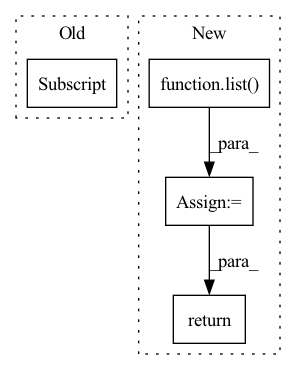

Pattern ID :1702

Before Change
// [n, k], 3σ rule
bernoulli = Bernoulli(logits=meanLogit - 3.0)
// [h*w, n, k] -> [n, h*w, k] (0 or 1 -> choose or not choose)
randomFalseMask = bernoulli.sample((logit.shape[1], )).permute(1, 0, 2)
randomFalseMask *= -1e9
bernoulli = Bernoulli(logits=-meanLogit - 3.0)
randomTrueMask = bernoulli.sample((logit.shape[1], )).permute(1, 0, 2)
After Change
quantizeds = list()
codes = list()
logits = list()
xs = list()
for xRaw in latents:
n, c, h, w = xRaw.shape
// [1, k, c]
codebook = getattr(self, "codebook")[None, ...]
// [n, c, h, w] -> [n, h, w, c]
encoderIn = xRaw.permute(0, 2, 3, 1)
// [n, h, w, c] -> [n, h*w, c]
encoderIn = self._position(encoderIn).reshape(n, -1, c)
// [1, k, c]
codebookQ = self._codebookQuery(codebook)
// [n, h*w, c]
x = self._encoder(encoderIn, codebookQ)
xs.append(x)
// [n, h*w, k]
logit = self._select(x)
// [k]
bernoulli = Bernoulli(probs=maskProb)
// [n, h*w, k] (0 or 1 -> choose or not choose)
randomFalseMask = bernoulli.sample((n, h*w, )).bool()
maskedLogit = logit.masked_fill(randomFalseMask, -1e9)
// randomFalseMask *= -1e9
// maskedLogit = logit + randomFalseMask // + randomTrueMask
sample = F.gumbel_softmax(maskedLogit, 1.0, True)
// [1, k, c]
codewords = self._codebookEncoder(codebook)
// [n, h*w, c]
quantized = sample @ codewords[0, ...]
// [n, h*w, c]
posistedQuantized = self._position(quantized.reshape(n, h, w, c)).reshape(n, -1, c)
// [1, k, c]
decodedCodes = self._codebookDecoder(codebook)
// [n, c, h, w]
deTransformed = self._decoder(posistedQuantized, decodedCodes).reshape(n, h, w, c).permute(0, 3, 1, 2)
// [n, c, h, w]
quantizeds.append(deTransformed)
codes.append(sample.argmax(-1).reshape(n, h, w))
logits.append(logit.reshape(n, h, w, -1))
return quantizeds, codes, logits, xs
In pattern: SUPERPATTERN
Frequency: 3
Non-data size: 4
Instances
Fragment ID: 5801390
Project Name: xiaosu-zhu/mcquic
Commit Name: ff056abb47b531e42496967adda543c562e1cefd
Time: 2021-05-12
Author: xiaosu.zhu@outlook.com
File Name: src/mcqc/models/quantizer.py
M Class Name: TransformerQuantizer
N Class Name: TransformerQuantizer
M Method Name: forward(3)
N Method Name: forward(3)
M Parent Class: nn.Module
N Parent Class: nn.Module
M File Name: src/mcqc/models/quantizer.py
N File Name: src/mcqc/models/quantizer.py
M Start Line: 505
M End Line: 554
N Start Line: 508
N End Line: 554
'>
Before Change
// [n, m, h, w, k, 1], [m, 1, 1, k, d] -sum-> [n, m, h, w, d] -> [n, m, d, h, w] -> [n, c, h, w]
return torch.einsum("nmhwk,mkd->nmhwd", sample, self._codebook).permute(0, 1, 4, 2, 3).reshape(n, -1, h, w)
print(sample[..., None].shape)
print(self._codebook[:, None, None, ...].shape)
exit()
return (sample[..., None] * self._codebook[:, None, None, ...]).sum(-2)
After Change
// [n, m, h, w, k, 1], [m, 1, 1, k, d] -sum-> [n, m, h, w, d] -> [n, m, d, h, w] -> [n, c, h, w]
return torch.einsum("nmhwk,mkd->nmhwd", sample, self._codebook).permute(0, 1, 4, 2, 3).reshape(n, -1, h, w)
quantizeds = list()
for i in range(len(self._codebook)):
// [n, h, w, k]
oneHot = sample[:, i]
// [n, h, w, k] @ [k, d] -> [n, h, w, d]
quantized = oneHot @ self._codebook[i]
quantizeds.append(quantized)
// m * [n, h, w, d] -> [n, h, w, c] -> [n, c, h, w]
return torch.cat(quantizeds, -1).permute(0, 3, 1, 2)
class _quantizerEncoder(nn.Module):
'>
Fragment ID: 5801391
Project Name: xiaosu-zhu/mcquic
Commit Name: e36abadfbaa15ca5f2208734c7a8c25586153013
Time: 2022-01-07
Author: xiaosu.zhu@outlook.com
File Name: src/mcqc/models/quantizer.py
M Class Name: _multiCodebookDeQuantization
N Class Name: _multiCodebookDeQuantization
M Method Name: forward(2)
N Method Name: forward(2)
M Parent Class: nn.Module
N Parent Class: nn.Module
M File Name: src/mcqc/models/quantizer.py
N File Name: src/mcqc/models/quantizer.py
M Start Line: 130
M End Line: 133
N Start Line: 156
N End Line: 164
'>
Before Change
token_index: LongTensor
) -> Tuple[LongTensor, FloatTensor]:
image_count = encoder_state.shape[0] // 2
token_index_batched = token_index[[0] * image_count * 2]
prev_tokens = prev_tokens[list(range(image_count)) * 2]
prev_tokens.clamp_(0, self.image_vocab_count)
decoder_state = self.embed_tokens.forward(prev_tokens)
decoder_state += self.embed_positions.forward(token_index_batched)
After Change
token_index_batched = token_index[None, :][list(range(image_count)) * 2]
if prev_tokens.ndim == 1:
prev_tokens = prev_tokens.unsqueeze(0)
prev_tokens = prev_tokens.T[list(range(image_count)) * 2]
prev_tokens.clamp_(0, self.image_vocab_count)
decoder_state = self.embed_tokens.forward(prev_tokens)
decoder_state += self.embed_positions.forward(token_index_batched)
decoder_state = self.layernorm_embedding.forward(decoder_state)
if decoder_state.ndim < 3:
decoder_state = decoder_state[:, None]
if attention_state is None:
attention_state = [None] * self.layer_count
for i in range(self.layer_count):
decoder_state, attention_state[i] = self.layers[i].forward(
decoder_state,
encoder_state,
attention_state[i],
attention_mask,
token_index
)
decoder_state = self.final_ln(decoder_state)
logits = self.lm_head(decoder_state)
temperature = settings[[0]]
top_k = settings[[1]].to(torch.long)
supercondition_factor = settings[[2]]
logits = logits[:, -1, : 2 ** 14]
logits: FloatTensor = (
logits[:image_count] * (1 - supercondition_factor) +
logits[image_count:] * supercondition_factor
)
if return_logits:
return logits
logits_sorted, _ = logits.sort(descending=True)
is_kept = logits >= logits_sorted[:, top_k - 1]
logits -= logits_sorted[:, [0]]
'>
Fragment ID: 5801392
Project Name: kuprel/min-dalle
Commit Name: 674cd2ef60b250b352d50ecd658e4ce41967dbe8
Time: 2022-07-18
Author: nev@neverix.io
File Name: min_dalle/models/dalle_bart_decoder.py
M Class Name: DalleBartDecoder
N Class Name: DalleBartDecoder
M Method Name: forward(8)
N Method Name: forward(7)
M Parent Class: nn.Module
N Parent Class: nn.Module
M File Name: min_dalle/models/dalle_bart_decoder.py
N File Name: min_dalle/models/dalle_bart_decoder.py
M Start Line: 142
M End Line: 153
N Start Line: 148
N End Line: 186